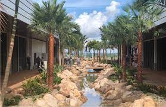
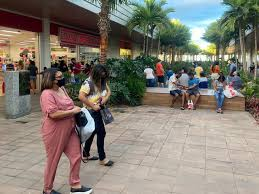
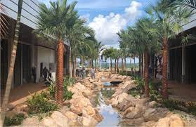
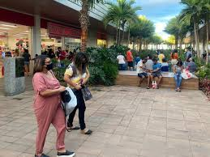
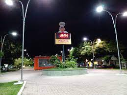
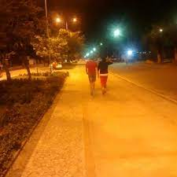

Shopping Carpina
O shopping Carpina foi inaugurado em março de 2019, ele é o primeiro shopping zona da mata norte de Pernambuco. Apesar de ser pequeno, ele tem diversas lojas como as Americanas, C&A e Lebiscuit por exemplo. Também tem uma faculdade, o banco Bradesco e a Caixa Econômica também estão presentes lá, e várias outras opções de serviços e lazer. Eu gosto muito de ir no cinema de lá, achei muito bom. Outra coisa legal é que a boa localização de Carpina faz com que o shopping receba muitas pessoas das cidades vizinhas.
 



Praça Dr. Murilo Siva
A praça Dr. Murilo Silva fica localizada bem no centro da cidade e está sempre cheia de gente, durante o dia ele é movimentada principalente devido ao grande comércio que a cidade tem. À noite é muito boa para passear com amigos e familiares, conversar e aproveitar os restaurantes e lanchonetes que estão sempre prontos para atender os clientes.
Rua dos Tamarindos
A Avenida Getúlio Vargas, conhecida como rua dos tamarindos é um dos principais locais de lazer da cidade de Carpina. As pessoas se reunem lá para fazer caminhadas e correr, é muito frequente também ver adultos com crianças se divertindo por lá. O fórum de Carpina, o Ministério Público e a agência dos correios ficam localizados nela.
